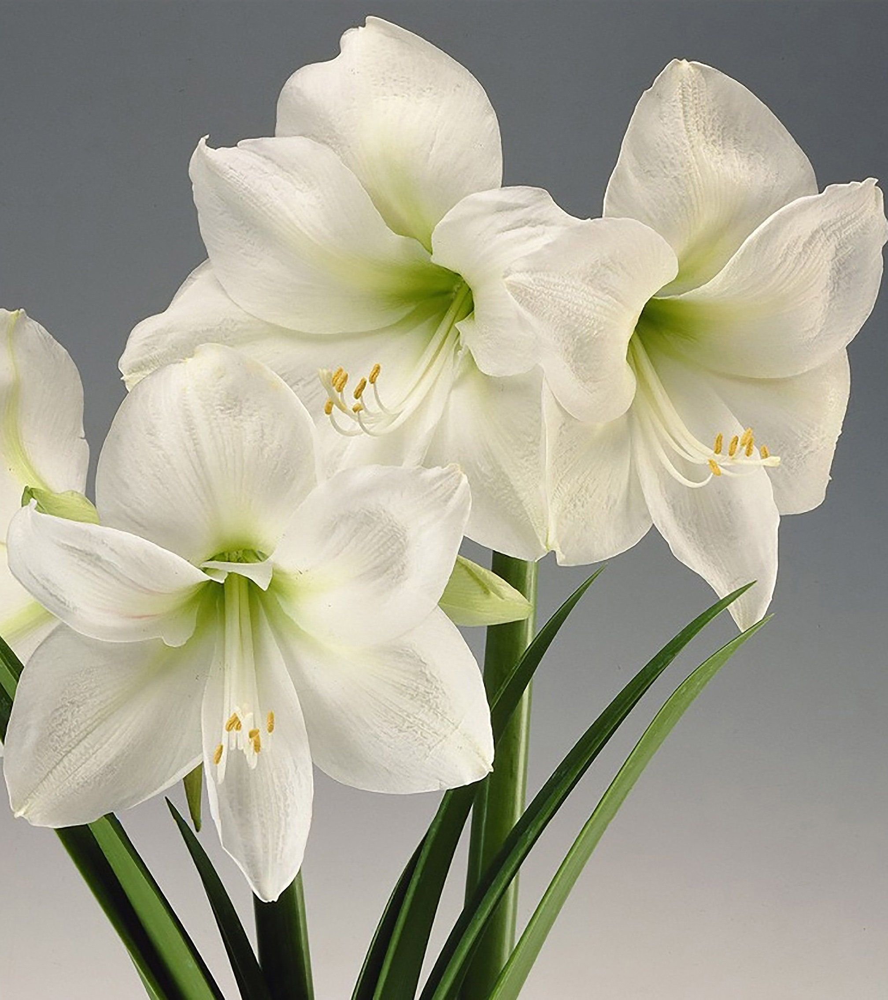
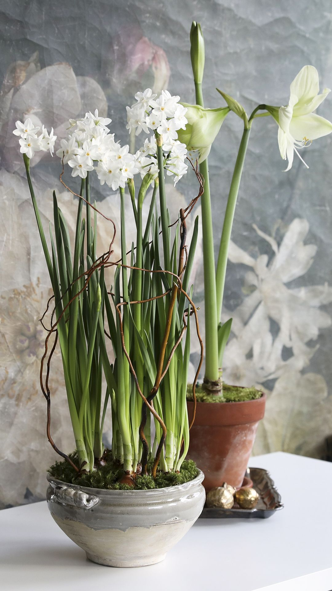
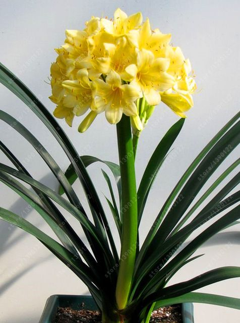
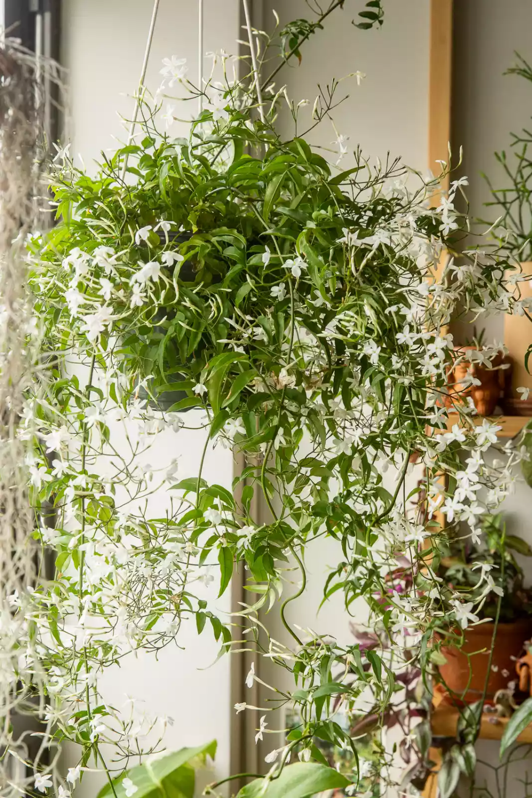
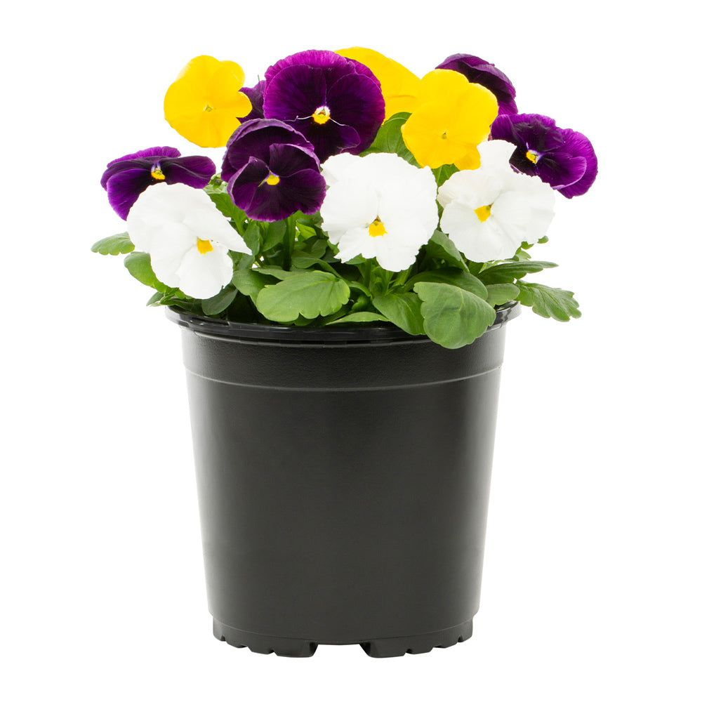
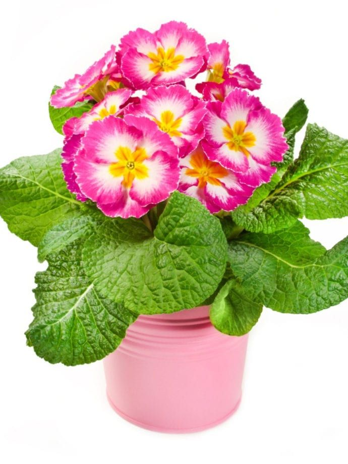

Elevate Your Environment with Everlasting Beauty

Warm Up for Woman's Day: Explore Our Winter Wonderland of Seasonal Plants
Popular flowering bulbous plant known for its large, trumpet-shaped blooms. It is widely cultivated for its stunning flowers, which come in various colors, including red, white, pink, orange, and bicolor varieties.
Popular for their delightful and fragrant blooms that appear when the weather is cooler. They are a simple yet effective way to infuse gardens with vibrant colors and pleasant scents, making them a favorite choice for winter landscaping.
Clivias are a beloved choice for winter gardening because of their ability to bloom in the shade during the winter months. Their bright and cheerful flowers bring a sense of warmth and vibrancy to gardens when many other plants are not in bloom.
Winter-flowering shrubs are popular for their ability to add visual interest and sweet fragrance to winter gardens. These shrubs provide a refreshing burst of scent and color during the colder months, enhancing the overall garden experience.
Winter pansies are popular for their resilience and ability to thrive in colder temperatures. They offer a wide range of colors and patterns, and their cheerful faces provide a welcome sight during the winter season, brightening up gardens and container displays.
Primroses are popular for their dainty and charming blooms that bring a touch of elegance to winter gardens. They are known for their cold tolerance and ease of cultivation, making them a top choice for adding color and cheer to outdoor spaces during the colder months.





